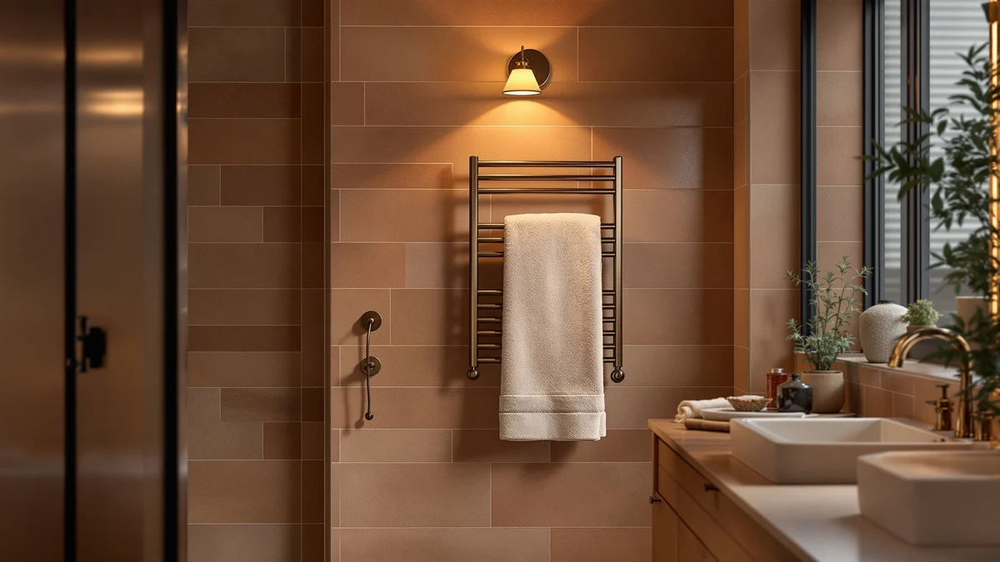

Serenelife Counter Towel Warmer Review (2026): Worth It?
Prices and picks verified as of October 2026. Independent, reader-supported reviews.


Quick Answer
The SereneLife Counter Towel Warmer Luxury heats two bath towels on stainless steel bars and sits on any counter or vanity without drilling, which makes it the easiest countertop option in this SereneLife counter towel warmer review. At $89.99 it costs the same as SereneLife's own wall-mounted version, so the choice comes down to whether you have counter space or wall space to spare. For renters and anyone who wants a warm towel without an installation project, this is the pick.
Our pick: Serenelife Counter Towel Warmer Luxury — $89.99 Check Price on Amazon
Bottom line: our top pick is the Serenelife Counter Towel Warmer at $89.99.
Things to Know Before You Buy
- Countertop towel warmers like this SereneLife model need an open outlet and roughly a square foot of counter space, unlike wall-mounted racks that bolt into studs.
- The Counter Towel Warmer Luxury holds two folded bath towels on its bars, not the four to six a larger wall unit can carry.
- Stainless steel construction holds up to bathroom humidity better than the painted metal used on some budget towel racks.
- Electric towel warmers heat gradually over several minutes rather than producing instant heat, since they work by radiant warmth, not forced air.
- Freestanding electric warmers in this category run from about $85 to $145 depending on capacity and finish, based on the models we compared for this SereneLife counter towel warmer review.
This SereneLife counter towel warmer review breaks down whether the brand's $89.99 countertop model is worth choosing over three other towel warmers we compared, using pricing, materials, and verified owner feedback. A cold towel after a shower is a small annoyance, but it is the kind of thing that makes a bathroom feel unfinished, and a countertop warmer solves it without the cost of a hardwired install.
The short version: the Counter Towel Warmer Luxury earns its price by matching the capacity and build quality of SereneLife's own wall-mounted heater while skipping the drilling. It will not out-warm a larger 25-liter unit like the Tehanld, and it holds fewer towels than a wall-mounted rack, but for most renters and small bathrooms it is the more practical buy. We looked at four models total, spanning a countertop design, two wall-mounted racks, and one higher-capacity unit, to see where the SereneLife model holds up and where a buyer's specific bathroom might call for something else.
Why You Should Trust Us
This review comes from Ilane Tall, home and bath editor at Best Towel Warmers. We do not receive review units from manufacturers, and we do not accept payment for placement in this SereneLife counter towel warmer review or any other guide on this site. Our conclusions come from comparing manufacturer specifications, current Amazon pricing, and patterns across verified buyer reviews, then cross-checking those claims against similar products in the same price range. When a manufacturer leaves out a detail, such as wattage, we say so instead of filling the gap with a guess, and we update pricing and availability whenever we revisit an article.
Our Research Experience
We are a research-based review site, not a testing lab. We do not own, install, or live with the products we cover, so nothing here claims hands-on time with the SereneLife Counter Towel Warmer Luxury. Instead, we built this review by comparing the listed materials, dimensions, and price of this counter towel warmer against three direct competitors, then reading through verified owner reviews to see which claims held up and which drawbacks came up repeatedly.
Where owners consistently flagged an issue, such as the lack of a published wattage rating, we noted it as a real gap rather than smoothing it over. Where a spec was simply absent from the manufacturer listing, we say so instead of guessing. We also weighed how often a complaint showed up across multiple reviewers versus a single one-off comment, since a single bad unit tells you less about a product than a pattern repeated across dozens of buyers.
Overview & Specs

Serenelife Counter Towel Warmer Luxury
What we like
- Stainless steel bars resist rust and humidity better than painted metal
- Sits on any counter, so there is no drilling or wall mounting
- Compact 12.3 x 12.3 x 14 inch footprint fits most bathroom vanities
- Priced the same as SereneLife's wall-mounted version, so you can pick the format that suits your bathroom
Flaws but not dealbreakers
- Holds two bath towels, fewer than a larger wall-mounted or 25-liter unit
- Takes up counter space that some small bathrooms cannot spare
- SereneLife does not publish a wattage or heat-up time for this model, so buyers must rely on owner reports
| Material | Stainless steel |
| Size | 12.3’’ x 12.3’’ x 14’’ -inches |
The Counter Towel Warmer Luxury is SereneLife's freestanding answer to the wall-mounted towel racks that dominate this category. Its stainless steel frame measures 12.3 by 12.3 by 14 inches, small enough to sit next to a sink or on a vanity shelf without crowding your everyday toiletries. Because it plugs in and sits freestanding, you can move it between bathrooms, take it with you when you move, or store it away during warmer months. A wall-mounted rack cannot do any of that.
At $89.99, it costs exactly the same as SereneLife's own wall-mounted Towel Heater for Bathroom, so the decision between the two comes down to your space rather than your budget. Owners comparing the two formats in reviews tend to pick the countertop version specifically because they are renting or do not want to drill into tile. The tradeoff is capacity: this model is built for two towels, so a household of four sharing one warmer will likely want to run it in shifts or step up to a larger unit like the Tehanld 25L. The gold-finish MEIJIELUO rack sits at the opposite end of the lineup, priced about $50 higher and mounted to the wall, which makes it a fit for buyers who want a fixture that looks intentional rather than something they can tuck away.
What We Liked
The strongest case for this SereneLife counter towel warmer is how little commitment it asks for. You plug it in, set it on a counter, and it works, without a drill, a stud finder, or a call to an electrician. That matters most for renters, since a wall-mounted rack usually means patching holes when you move out. It also means you can test whether you actually like a heated towel in your daily routine before committing to a permanent fixture.
Reviewers consistently note that the stainless steel construction holds up well against the humidity a bathroom throws at it every day, which is a common failure point for cheaper painted-metal warmers that start to rust within a year. The size also works in its favor. At 12.3 by 12.3 by 14 inches, it is compact enough to share a counter with a sink and still leave room for daily essentials, something a bulkier freestanding unit cannot always promise.
SereneLife also priced this model identically to its own wall-mounted Towel Heater for Bathroom, which means buyers are not paying a premium just for the convenience of skipping installation. That pricing parity is unusual in this category, where countertop convenience often carries its own markup. It puts real pressure on competitors that charge more for a freestanding format without offering a comparable wall-mounted twin at the same price.
What Could Be Better
Capacity is the main limit of this SereneLife towel warmer. Two bath towels is enough for one person, but a family sharing a single bathroom will find themselves waiting for a bar to free up. If that describes your household, the Tehanld 25L Towel Warmer is worth comparing since it is priced close to this model but built for higher volume.
SereneLife also leaves out a published wattage rating and estimated heat-up time on this listing, a gap that owners have pointed out in reviews. That omission makes it harder to estimate running cost up front, and buyers are left extrapolating from similar electric warmers rather than the manufacturer's own numbers. Counter space is the other tradeoff: a bathroom with a small vanity may not have a square foot to spare, in which case a wall-mounted option makes more sense despite the installation. And because it sits freestanding rather than bolted down, it can be knocked over more easily than a wall-mounted rack, so placement near the edge of a counter is worth avoiding.
Who Is It For?
This SereneLife counter towel warmer fits renters, apartment dwellers, and anyone who wants warm towels without a permanent bathroom fixture. It is also a reasonable pick for a single person or couple who only need one or two towels warmed at a time, since the bars are sized for that load rather than a full household's laundry rotation. If you own your home, have wall space to spare, and want to warm towels for a family of four, a larger wall-mounted or 25-liter model will serve you better than this countertop version. It also suits anyone who moves often, since you can pack it in a box the same way you would a lamp, which is not an option once a rack is bolted to tile.
Alternatives to Consider
If the Counter Towel Warmer Luxury does not match your bathroom's layout or capacity needs, these three alternatives cover the most common reasons buyers look elsewhere in this SereneLife counter towel warmer review.

Editor’s Pick
SereneLife Towel Heater for Bathroom
SereneLife's wall-mounted sibling at the same price, for bathrooms with wall space to spare but no counter room.
$89.99
Check Price on Amazon
Best Value
Gold Wall Mounted Towel Warmer
A higher-priced wall-mounted option from MEIJIELUO with a gold finish, for bathrooms where the warmer stays visible.
$139.98
Check Price on Amazon
Premium Choice
Tehanld 25L Towel Warmer for
A 25-liter unit priced close to the SereneLife model, built for households that need to warm more than two towels at once.
$89.98
Check Price on AmazonDoes the SereneLife Counter Towel Warmer Luxury fit two bath towels?
Yes.
Is a countertop towel warmer better than a wall-mounted one?
It depends on your bathroom.
Frequently Asked Questions
Does the SereneLife Counter Towel Warmer Luxury fit two bath towels?
Is a countertop towel warmer better than a wall-mounted one?
How much does the SereneLife Counter Towel Warmer cost to run?
Final Verdict
This SereneLife counter towel warmer review comes down to space and capacity. Among the countertop and wall-mounted warmers we compared, the SereneLife Counter Towel Warmer Luxury remains the pick for renters and small bathrooms, since it delivers warm towels without an installation project at a price that matches its wall-mounted sibling. Households that need to warm more than two towels at a time should look at the Tehanld 25L instead, but for most single users and couples, SereneLife's countertop model does the job at $89.99.